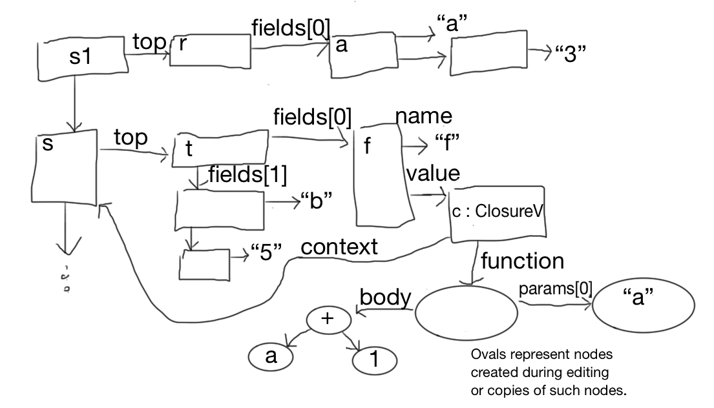

Values in Plaay fall into a few categories.
In the future, classes closures (the run time representation of classes) and arrays might be added.
An obvious representation is something like this.
abstract class ValueA
class StringValueC extends ValueA
con contents : String
class ObjectC extends ValueA
con fields : Sequence<FieldC>
class ClosureC extends ValueA
con function : LambdaC
con context : StackC
class NullC extends ValueA
class DoneC extends ValueA
class FieldC
con name : String
var value : ValueA
con isConstant : boolean
class StackC
con top : ObjectC
con next : StackC or null
[I'm using pseudo code, here, using the Java convention that pointers are implicit. E.g. two ClosureC objects could share the same LambdaC object, since the function field contains a pointer to an object of class LambdaC, not an actual LambdaC object. Contrary to Java, I'll assume that in general pointers are not null. Where null is allowed, I'll write "or null". The other convention I'm using is that con marks field whose values never change after construction (final fields in Java terms) while var marks field whose values may need to change during run time.]
The first three classes should be fairly self explanatory. The fourth,
class ClosureC extends ValueA
con function : LambdaC
con context : StackC
needs more explanation. The .funtion field represents the code of the function (including parameters). See Static-model for the definition of its type, LambdaC. The need for the .context field in the representation of closures needs a bit of explanation. When a function is executed, we need a place to look for variables that are referred to during execution. This place is called the stack. Nonempty stacks are represented by StackC objects. For example, suppose we have some Plaay code equivalent to
f := lambda( a ) { a + 1 }
f(3)
and execute it with the stack that is s and say the top object of s is t. I'll assume that f is in fact a field of t; that is, one of the FieldC objects in t's sequence has its .name equal to "f". I'll call that FieldC object f. [I'll use blue font for text that is meant to represent plaay code. Some day I should come back and replace the blue parts with actual plaay code.]
Now would be a good time to stop and draw a picture of s, t, and f.
The first command needs to evaluate the lambda expression. Lambda expressions evaluate to ClosureC objects. Let's call the new closure object c. Its .function field points to the abstract syntax tree representation of the lambda expression (i.e. to a model object that was produced during editing). c's .context field will point to s.
For the f := c assignment to happen, we need to find f's representation. This is done by the following algorithm.
function lookUp( varName : String, stack : ) : FieldC or null
if stack == null then null
else if stack.top has a field whose name is varName then that field
else lookUp( varName, stack.next )
Running this function with arguments "f" and s finds f. Ececuting f := c means , the .value field of the FieldC object f is set to point to c.
It's a good time to update that picture to include c.
[There is a small error in this diagram and the next few. Function bodies are always sequences, so the body pointer should point to a sequence with one child, which is the node labelled by "+". Also there should be another node between the lambda node (that function points to) and its parameter. Finally lambda nodes have another child, which is their return type.]
Now consider the second line: f(3). The variable f is evaluated by running lookUp("f", s), which results again in f and then the .value field is taken. So the value of the f is a closure represented by c. Next the string 3 is evaluated, this results in a StringC object, call it 3. Now the closure is applied to its argument. To do this we first construct an "activation record". (activation records are also known a "stack frames".) The fields of the record correspond to the parameters of the function. So we have a new ObjectC object (call it r) with one field (all it a). Of course a.name is "a" and a.value is 3. And we construct a new StackC object (call it s1). s1.top is r and s1.next is s.
Its a good time to update the picture.

Now to complete the evaluation of the expression f(3), we evaluate the expression a + 1 using s1 as the stack. So now, when "a" is looked up, the a field is found and its value is 3. After the addition, the result is a StringValueC object representing a 4.
For this example, the recursive case of lookUp hasn't been used and so the .next field of class StackC has not been used. And that means that value of the .context field of class FunctionC hasn't yet mattered. Let's change the example a bit to
b := 5
f := lambda( a ) { a + b }
f(3)
We'll assume that t has another FieldC b, representing b. This time what happens when a + b is evaluated using s1 as the stack? When b is looked up the call to lookUp("b", s1) recurses to lookUp("b", s) which results in b. The result then represents 8.
The following figure shows the stack when a+b is evaluated.
Now add a couple of lines so we have
b := 5
f := lambda( a : Num ) { a + b }
f(3)
b := 6
f(3)
The second call results in an object representing 9.
The need for the context is really shown when we call a closure somewhere far away from where it is created.
Consider
var b : Num := null
f := lambda( a : Num ) { b := a }
g( f )
Somewhere deep in g, there may be a call to the closure stored in f. It is important that at that time the lookUp routine finds the b that was declared in the code above. This should be true even if g declares a variable called "b".
A closure may be called even after the subroutine in which it was called has returned. Consider the following code
con scale := lambda( a : Num ) {
lambda(x : Num ) { a * x } }
con double := scale( 2 )
con triple := scale( 3 )
So that double(42) gives 84.
When scale( 2 ) is called, the value is a closure created by the evaluation of lambda(x : Num ) { a * x } in a context where "a" is bound to 2. This context is captured retained in the closure.
Exercise. Draw a picture representing the stack after these three declarations are done. To do that you should know that each var or con declaration pushes another StackC object on the stack. So after these three declarations have executed, the stack should consists of at least three objects, each with one field. Also you should know that the initialization expression is evaluated using the new stack. So the context for the value of scale will point to the activation record in which "scale" is the name of the field. This makes it easier to write recursive functions.
Now suppose there is a call double(3). Draw the stack in which a * x is evaluated.
Finally closures are used to allow fields of objects to be looked up by the classes methods. Consider a class
Class Counter
var a := 0
con incr := lambda() { a := a+1 }
con get := lambda() { a }
An ObjectC o representing a Counter object has a sequence of 3 FieldC objects. The closures representing the incr and get methods have o as the top of their context. This means that when "a" is looked up during execution of a method's body, the field in object o will be found. This is why we use the same data type to represent both activation records and objects made by classes.
One issue I'm ignoring here is the ability to undo steps taken during evaluation. If we use the transactional memory approach, then nonconstant fields above need to be implemented by transactional variables. For example
class FieldC
con name : String
var value : ValueA
would be implemented by
class FieldC
con name : String
con value : TVar<ValueA>
See the Static-model document.
The evaluation process described above could be implemented using the interpreter pattern. We aren't going to use it, but it may be worth taking a quick look at it.
The interpreter pattern works by giving each node of the abstract syntax tree an eval method that takes a stack as an argument. For example for AST nodes representing variables we have
method eval( s : StackC ) : ValueA
con v := lookUp( this.name, s )
if v == null then throw an exception
return v.value
For a node representing addition we would have
method eval( s : StackC ) : ValueA
con x = this.left().eval(s)
if x does not represent a number, throw an exception
con y = this.right().eval(s)
if y does not represent a number, throw an exception
con z := the sum of the numbers represented by x and y
con str := z turned into a string
return new StringC( str )
For sequences we have
method eval( s : StackC ) : ValueA
return new ClosureC( this, s )
For a lambda expression we would have
method eval( s : StackC ) : ValueA
return new ClosureC( this, s )
For a node representing the application of a function to arguments, we would have
method eval( s : StackC ) : ValueA
con c := this.function.eval( s )
if c is not a ClosureC then throw an exception
con as := [this.args[0].eval(s), this.args,[1].eval, ... ]
con ps := a list of parameter names obtained from c.function
if a[0] is represents a value not of type p[0].type, throw an exception
and so on for all the arguments
// Make an activation record.
con fs := [new FieldC( ps[0].name, vs[0]), new FieldC( ps[1].name, vs[1]), ... ]
con activationRecord := new ObjectC( fs )
// Note that the new stack uses the context from the closure.
con s1 := new StackC( activationRecord, c.context )
return c.function.body.eval( s1 )
However, we want to be able to do debugger-type single-stepping. So we need an alternative to the interpreter pattern that lets us intersperse small bits of evaluation with waits for user input. There might be a way to make it work by using concurrency. But JavaScript does not support concurrency. There might be a way to make it work using the TBC library, but that would be rather tricky, I think.
The solution below is based very much on the way the same problem is solved in the Teaching Machine.
The state of the execution of a program is represented by an object called the virtual machine state. It will probably have a lot of fields and methods, but I'll just start with one and add more as needed
class VMSC
con evalStack := Stack<EvaluationC>
An evaluation represents the state of the evaluation of a single expression. This expression might be the body of a function, which is why we need a stack. If we execute a sequence
var c := 4
var b := 5 + c
f := lambda( a ) { a + b }
var x := f(3)
x
there will be one evaluation representing the sequence and then one evaluation representing the evaluation of the body of the closure.
Let's start with a simpler example that only uses one example. Then we'll come back to the one above.
Suppose we want to evaluate an expression a+b in a stack s that has a and b as fields. We make an evaluation that has a pointer to the AST node for a+b, this is called the root of the evaluation. The evaluation also has to keep track of which parts of the tree have been evaluated and which have not and for those that have been evaluated, what value they evaluated to. This part of the evaluation is called its map. The map maps ASTA nodes to ValueA objects. An evaluation also has a stack of pending nodes and optionally a selected node.
class EvaluationC
con root : ASTA
con stack : StackC
con map : MutableMap<ASTA, ValueA>
con pending : Stack<ASTA>
var ready : boolean
The evaluate a+b we start by making an evaluation that has the Plus node as its root. It has s as its stack. Its map is empty. Its pending stack contains only the root and ready is false. Ready means that the top node on the pending stack is ready to be stepped (evaluated). Here is the state of the evaluation initially
.
In single stem mode, the user will see the the expression being evaluated turn into a value bit by bit. That is they will see the following succession of states of evaluation
a + b (and the a node is highlighted and the a field on the stack is highlighted)
42 + b (and the b node is highlighted and the b field on the stack is highlighted)
42 + 23 (and the + node is highlighted)
65 (and no node is highlighted)
Here is what is happening in terms of the evaluation:
* A select message is sent to the top pending node (the root).The root decides to evaluate its left child first (left-to-right selection strategy). So it pushes its left child onto the pending stack and forwards the select message to the a node. The a node selects itself by setting ready to true. It also highlights looks up the a field on the stack. The state is

The user sees: a + b (and the a node is highlighted and the a field on the stack is highlighted)
* Since ready is true, a step message is sent to the a node (it being the top of the pending stack. The step method of the a node looks up the a field on the stack (again) turns off the highlighting of that field and maps itself to the value of that field. It also pops itself off pending and sets ready to false. The state is

* Since ready is false, a select message is sent to the top pending node (the root). This time, since its left child is mapped, it decides to evaluate its right child next. The rest is similar to what happened above. The user sees: 42 + b (and the b node is highlighted and the b field on the stack is highlighted). The state is

* Since ready is true a step message is sent to the b node. The step method for the b node is the same as that for the a node. So, the node is mapped to the variable's value, highlighting is turned off, the b node is popped from the pending stack, and ready is set to false. The state is

* Since ready is false, a select message is sent to the top pending node (the root). This time, since all its children are mapped, it is ready to be stepped, so it sets ready to true. And the user sees 42 + 23 (and the + node is highlighted)

* Since ready is true, a step message is sent to the top pending node. This is the root. It looks at the values of its children (using the map) adds them and maps itself to the resulting value. And the user sees. 65 (and no node is highlighted) . The evaluation is done. The state is

The VMSC is pushed forward by a call to its advance method. Each * in the above example represents a call to advance.
class VMSC
...
method canAdvance()
return evalStack.notEmpty()
method advance()
pre canAdvance()
if evalStack.top().isDone()
con value := evalStack.top()
evalStack.pop()
if evalStack.notEmpty
evalStack.top.setResult( value )
else
evalStack.top().advance( this )
An evaluation is done when its root has been evaluated
class EvaluationC
...
invariant: pending.isEmpty iff isDone()
method isDone()
return root in map.domain()
The advance method for an evaluation either does a selection or a step
class EvaluationC
...
method advance( vms : VMSC )
pre not isDone()
// and therefore pending is not empty()
if ready then
pending.top.step( vms )
else
pending.top.select( vms )
The rest of the work is done in the step and select methods for the AST nodes.
Selection: Many nodes use the left-to-right selection strategy. The Plus node would be an example. The left-to-right strategy is this. Note that select messages are only ever sent to the top pending node.
method select( vms : VMSC )
con eval := vms.evalStack.top()
pre eval.pending is not empty and eval.pending.top() = this
if all this node's children are in the domain of eval.map then
// Select this node.
eval.ready := true
else let i be the number of the first child not in the domain of eval.map
eval.pending.push( children[i] )
node.children[i].select( eval )
[This is the most common selection strategy, so this could be the default. Exceptions to the normal strategies can be overrides.]
For "if" nodes selection is like this
method select( vms : VMSC )
con eval := vms.evalStack.top()
pre eval.pending is not empty and eval.pending.top() = this
if the guard is in the domain of eval.map then
if the guard is mapped to a value representing "true" then
if thenPart is in the domain of eval.map then
eval.ready := true
else
eval.pending.push( thenPart )
thenPart.select( eval )
else if the guard is mapped to a value representing "false" then
if elsePart is in the domain of eval.map then
eval.ready := true
else
eval.pending.push( elsePart )
elsePart.select( eval )
else error!!
For nodes representing variables, selection is simple
method select( vms : VMSC )
con eval := vms.evalStack.top()
pre eval.pending is not empty and eval.pending.top() = this
look up the variable in the stack and highlight it.
eval.ready := true
[Note on the pending stack: Because the only nodes pushed on to pending are either the root (when the stack is empty) or a child of the top of pending, it follows that if the value of pending is [nd0, nd1, ..., ndn] (with the top on the right), then nd0 is the root, nd1 is a child of nd0, nd2 is a child of nd1, and so on. So the whole stack can be represented with one pointer "top". "top" is null if pending is empty. push(nd) can be implemented by top := nd and pop by top := parent of top or null if top is the root.]
Stepping: Stepping also depends on the node type. For plus nodes
method step( vms : VMSC )
con eval := vms.evalStack.top()
pre eval.pending is not empty and eval.pending.top() = this and eval.ready
get the values mapped by the two children
if both represent numbers,
con v := make a new number representing the sum
eval.map.add(this, v)
eval.pending.pop()
eval.ready := false
else
error!
For if nodes
method step( vms : VMSC )
con eval := vms.evalStack.top()
pre eval.pending is not empty and eval.pending.top() = this and eval.ready
var v
if the guard maps to true
v := eval.map.get( thenPart )
else
v := eval.map.get( elsePart )
eval.map.add(this, v)
eval.pending.pop()
eval.ready := false
For variable nodes
method step( vms : VMSC )
con eval := vms.evalStack.top()
pre eval.pending is not empty and eval.pending.top() = this and eval.ready
var f := lookUp( name, eval.stack )
remove highlight from f
eval.map.add(this, f.value)
eval.pending.pop()
eval.ready := false
So why do we need a stack of evaluations. The idea is that each level of the stack represents the evaluation of one function. So let's look at how a function call can be evaluated.
The select method for LambdaC nodes just sets ready to true. The step method for LambdaC nodes just creates a new ClosureC (using the stack field of the top evaluation for the context, and maps the LambdaC node to the closure. So lambdas are simple.
For application of a function (i.e. closure) to a list of arguments, we use nodes of class ApplyC. The select method for ApplyC nodes uses the usual left-to-right strategy.
Before looking at the algorithm for step, let's look at what it needs to acheive. Suppose we are about to step the application in this sequence
f := lambda( a : Num ) { a + b }
b := 5
f(3)
The top evaluation on the stack looks like this

[I left out the two assignment expressions, which are the first two children of the root node, they are mapped to Done.]
After the application node has been stepped, a new evaluation has been pushed on to the stack and the top two evaluations on the stack look like this.

The step method looks like this:
method step( vms : VMSC )
con eval := vms.evalStack.top()
pre eval.pending is not empty and eval.pending.top() = this and eval.ready
pre all children of this node are mapped.
con c := eval.get( this.function )
if not c isA ClosureC then error!
con c1 := c asA ClosureC
con f : LambdaC := c1.function
con argList := [eval.get( this.args(0) ), eval.get( this.args(1) ),.. ]
if the length of arglist not= the length of f.params then error!
if any argument has a value not compatible with the corresponding parameter type
then error!
var params := f.params.children
con arFields := [ new FieldC( params[0].name, argList[0] ),
new FieldC( params[1].name, argList[1] ),
.. ]
con activationRecord := new ObjectC( arFields )
con stack := new StackC( activationRecord, cl.context )
con newEval := an EvaluationC with
newEval.root := f.body
newEval.stack = stack
newEval.map = an empty map
newEval.pending = a stack containing only f.body
newEval.ready = false
vms.evalStack.push( newEval )
Note that unlike every other step method, this one does not pop the pending stack.
So the step takes care of entering the function being called. What about function return? Here is advance for VMSC again.
class VMSC
...
method canAdvance()
return evalStack.notEmpty()
method advance()
pre canAdvance()
if evalStack.top().isDone()
con value := evalStack.top()
evalStack.pop()
if evalStack.notEmpty
evalStack.top.setResult( value )
else
evalStack.top().advance( this )
Once the function has executed as far as it can, its root node (i.e. the function body) will be mapped to its return value. The next call to vms.advance records this return value, pops the evaluation, and sends the return value to the next evaluation down the stack (i.e. the new top) using the setResult method. So what we need to do is implement that method.
class EvaluationC
...
method setResult( value : ValueA ) {
pre: The pending stack is not empty and its top node is an ApplyC
con node : ApplyC := this.pending.top
con lambda : = this.map.get(node.function)
if lambda has a result type and the type of value is not compatible
then error!
this.map.set( node, value )
this.pending.pop()
this.ready := false
It would be nice if during execution one could edit the program, for example to fix mistakes or fill in missing parts. In order not to mess up any partially complete evaluations, it is important not to change some AST. For example if we deleted a node that is on a pending stack, that would cause problems the next time we send a step or select message that node.
One way to accomplish this is to make a copy of the relevant part of the program tree each time an new evaluation is made. (For example in the step method of ApplyC.). Then the original can be edited to one's heart's content, although evaluations currently on the stack will not be affected by the changes.
pro: No restriction on editing.
con: Edits do not affect current evaluations and so the user may see "old code" when they return to execution mode.
precedent: This was done in the Sharp APL editor. It was also done in the 1985 implementation of Prograph.
Another solution is to consider "locked" any node such that changing it could mess up a current evaluation. I think it is sufficient to say that a node is locked iff it is in the pending stack of some evaluation on the evaluation stack. Each node is provided with a counter. The counter is incremented when the node is pushed on to the pending stack and decremented on pop. The node is locked if the counter isA locked node can not have any of children changed nor any of its other attributes changed.
pro: There is only one current copy of each function body.
con: There are restrictions on what can be edited.
con: Complicates the program editor.
con: Complicates undo/redo in the editor. Suppose I make an edit to node x. Later it becomes locked. And then I try to undo my edit. This undo must be prevented somehow.